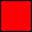

Iowa Environmental Mesonet:: Capturing Iowa's Weather and Climate Variability
Current Weather @
9:46 AM
ISU AEA Farm (2 miles SE FPS)
Air Temp:
80
°F
Rain:
0.00
"
4" Soil Temp:
--
°F
Symbol Legend:
ISU Soil Moisture
Airports
Climate Stations
Climate Districts
 State Averages
Main Topics
4in Soil Temps
Main Topics
April Wind Speed
2022 Humidity
2022 Heat Index
Wind Roses
Month/Season:
Calendar Year
January
February
March
April
May
June
July
August
September
October
November
December
View Windrose
Main Topics
Average Temperature
Daily Max Precip
Drought Monitoring
Trends
Variable:
Maximum High
Average High
Minimum High
Maximum Low
Average Low
Minimum Low
Average Temp
Ave High + Low Range
Maximum Daily Precip
Total Precipitation
Month/Season:
Calendar Year
Spring (MAM)
Fall (SON)
Winter (DJF)
Summer (JJA)
January
February
March
April
May
June
July
August
September
October
November
December
Create Chart